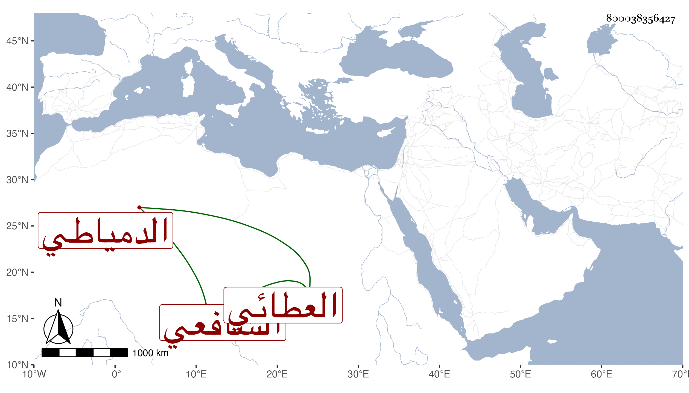

0902Sakhawi.DawLamic.ITO20230111-ara1.EIS1600.800038356427
Biography ID: 800038356427
774
عبد القادر بن محمد بن علي بن عبد الله بن أحمد محيي الدين بن الشمس الشارمساحي الدمياطي الشافعي العطائي الآتي أبوه . شاب فهم قرأ علي في شرح النخبة دراية وسمع مني أشياء واشتغل على غير واحد مع خير واستقامة وقد أجزت له .
